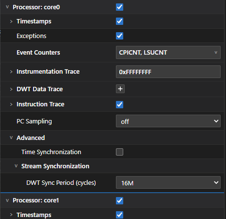

Experimental Features
Experimental features are implemented to iterate on new functionality. Experimental features have limited test coverage and the functionality may change in future versions of the CMSIS-Toolbox without further notice.
Resource Management
The CMSIS-Toolbox version 2.7 implements the experimental features for: - Resource Management
Hardening and finalizing of these features is planned for a later CMSIS-Toolbox version.
In a multi-processor or multi-project application, the target type describes the target hardware. A solution is a collection of related projects, and the context set defines the projects that are deployed to the target hardware. A project uses a subset of resources (called regions at linker level).
The linker script management is extended for multi-processor or multi-project applications with the following features:
-
When
resources:node is specified in one of the*.cproject.ymlor*.clayer.ymlfiles of a csolution project:- The file
.\cmsis\<solution-name>+<target-name>.regions.his generated. This file contains the global region settings of a solution for one target type. - The file
.\cmsis\<solution-name>+<target-name>.regions.hreplaces theregions_<device_or_board>.hthat is located in the directory./RTE/Device/<device>. Theregions_<device_or_board>.his no longer generated.
- The file
-
A
define: <project-name>_cprojectis always added to the linker script pre-processor (also when noresources:node is used).
The following picture explains the extended linker script management for multi-project applications.

resources:
The resources: node specifies the resources required by a project. It is used at the level of project:, setup:, or layer:. The resources: node is additive; when multiple resources: nodes specify the same region, the size is added.
Note
In a next iteration, the linker script may be generated by the CMSIS-Toolbox and features from uVision to allocate source modules to specific regions may get added. Therefore the resources: node is forward-looking in the way heap and stack are specified.
resources:
regions:
- region: __ROM0 # region name pre-defined in script template: __ROM0..3
size: 0x10000 # specifies region size
# name: ITCM_Flash - maps to physical memory name(s), if missing use PDSC default memory
# address: - absolution address of region; not in scope for 2.7
# startup: - locate startup/vectors to this region; not in scope for 2.7
# align: - alignment restrictions of the regions; not in scope for 2.7
- region: __RAM0 # region name pre-defined in script template: __RAM0..3
size: 0x8000 # specifies region size
heap: 0x2000 # heap size (only permitted region __RAM0)
stack: 0x4000 # stack size (only permitted in region __RAM0)
# name: - maps to physical memory name(s), if missing use PDSC default memory
# - SRAM1
# - SRAM2
# address: - absolution address of region; not in scope for 2.7
# align: - alignment restrictions of the regions; not in scope for 2.7
# sections: - potentially locate sections (requires linker script generation); not in scope for 2.7
# - .text.function
Example <solution-name>+<target-name>.regions.h file
#ifndef USBD_STM32F746G_DISCO_REGIONS_H
#define USBD_STM32F746G_DISCO_REGIONS_H
// *** DO NOT MODIFY THIS FILE! ***
//
// Generated by csolution 2.7.0 based on packs and csolution project resources
// Device Family Pack (DFP): Keil::STM32F7xx_DFP@3.0.0
// Board Support Pack (BSP): Keil::STM32F746G-DISCO_BSP@1.0.0
// Available Physical Memory Resources
// rx ROM: Name: ITCM_Flash (from DFP) BASE: 0x00200000 SIZE: 0x00100000
// rx ROM: Name: Flash (from DFP) BASE: 0x08000000 SIZE: 0x00100000 (default)
// rwx RAM: Name: DTCM (from DFP) BASE: 0x20000000 SIZE: 0x00010000
// rwx RAM: Name: SRAM1 (from DFP) BASE: 0x20010000 SIZE: 0x00020000 (default)
// rwx RAM: Name: SRAM2 (from DFP) BASE: 0x20030000 SIZE: 0x00020000 (default)
// rwx RAM: Name: BKP_SRAM (from DFP) BASE: 0x40024000 SIZE: 0x00001000
// rwx RAM: Name: ITCM (from DFP) BASE: 0x00000000 SIZE: 0x00004000
//--------------------------------------
#ifdef A_cproject
// Resources allocated in A.cproject.yml
#define __ROM0_BASE 0x08000000 /* Memory Name: Flash */
#define __ROM0_SIZE 0x00010000
#define __RAM0_BASE 0x20010000 /* Memory Name: SRAM1 */
#define __RAM0_SIZE 0x00008000
#define __STACK_SIZE 0x00004000
#define __HEAP_SIZE 0x00002000
#endif /* A_cproject */
//--------------------------------------
#ifdef B_cproject
// Resources allocated in B.cproject.yml
#define __ROM0_BASE 0x08010000 /* Memory Name: Flash */
#define __ROM0_SIZE 0x00030000
#define __RAM0_BASE 0x20018000 /* Memory Name: SRAM1+SRAM2 */
#define __RAM0_SIZE 0x00020000
#define __STACK_SIZE 0x00000200
#define __HEAP_SIZE 0x00000000
#endif /* B_cproject */
#endif /* USBD_STM32F746G_DISCO_REGIONS_H */
Question
- Should the
<solution-name>+<target-name>.regions.hfile contain also#definesymbols for the overall available memory, i.e. for a boot loader?
Server Mode
The csolution tool supports the command line argument rpc to initiate a server mode. With this mode rpc commands can be initiated. The first set of commands will be used by the VS Code CMSIS Solution extension to select components and packs for projects and layers.
Refer to github.com/Open-CMSIS-Pack/csolution-rpc for more information.
Zephyr Module Export
This is work in progress and the intended usage is initially for ML models generated for ExecuTorch. However the concept is flexible enough so that it can extend to other software components.
The CMSIS-Toolbox 2.14 allows to export a software layer (defined in *.clayer.yml) into a Zephyr module so that software delivered as CMSIS-Packs can be integrated in Zephyr builds.
A layer is converted to a Zephyr module with the standard Zephyr entry points:
zephyr/module.ymlto declare the module and connect it to CMake/Kconfig integration.Kconfigoptions that expose the available CMSIS-Pack components and allow enabling/disabling them viaCONFIG_...defines.CMakeLists.txt/sources.cmakethat map the selected CMSIS-Pack sources and include paths into the Zephyr build.- Generated compatibility headers (for example
RTE_Components.h/Pre_Include_Global.h) to bridge CMSIS component configuration into the consuming build.
The exported module can then be consumed by a Zephyr application by adding the module path to ZEPHYR_EXTRA_MODULES (or through a west manifest) and enabling the desired CONFIG_... symbols in prj.conf.
Example: the cmsis-to-zephyr-concept ml_inference example shows a minimal end-to-end flow: exporting a layer as a Zephyr module and consuming it from a Zephyr application.
Trace
Target execution data is captured through trace stream channels. The overall process has these steps:
- Configure trace communication (how trace leaves the MCU) with the
target-set:in*.csolution.yml(and optional settings in*.dbgconf). - Configure trace generation (what the MCU produces: ITM, DWT, etc.) with the
*.ctrace.ymlfile. - Collect trace information (debugger receives and records the stream) into raw data files.
- Analyze trace data files (host tools interpret the collected raw trace data files) and generate CSV and CTF files.
This section uses <solution-set> as the combined name of the solution, target-type, and target-set name, for example SDS+AppKit-E8@HIL.
Note
- Trace does not include SEGGER RTT, SystemView, or STDIO UART output. These features use separate data output paths.
Trace Stream Channels
The trace stream channels are configured using the trace: node in target-set: of the *.csolution.yml project file. The following trace stream <channels> may be used:
<channel> |
Description |
|---|---|
| SWO | Serial-Wire Output: one-pin interface that sends trace information using UART or Manchester mode (tbd). |
| TB | Embedded Trace Buffer or Micro Trace Buffer that stores trace information in memory. |
| ER | Event Recorder: uses code annotations that store program events in memory. |
Directory and File Structure
Trace-related files are stored relative to the directory that contains the *.csolution.yml file.
| Directory or File | Created by | Description |
|---|---|---|
. |
User | Contains the *.csolution.yml project file. |
.cmsis/<solution-set>.ctrace.yml |
CMSIS-Debugger | User trace intent and "solution-set specific" trace capture configuration. |
.trace/<solution-set>.ctrace-run.yml |
pyTS | Generated trace run information, including resolved symbols and register values. |
.trace/<solution-set>.<channel>.raw |
pyOCD | Raw trace data files, specific to a <channel> (SWO, TB, or ER). |
.trace/<solution-set>.<channel>.csv |
ctrace | CSV files that represent raw trace data files. |
.trace/<solution-set>.ctf/ |
ctrace | Directory for CTF files such as metadata, stream_0, and stream_1. |
The file .cmsis/<solution-set>.ctrace.yml configures the trace generation. It is created or updated by the user interface of the CMSIS-Debugger Trace View.
The pyTS utility resolves symbol-based settings in *.ctrace.yml against the ELF/DWARF information of the active <solution-set> and generates the register setup for the hardware configuration. The output is the file .trace/<solution-set>.ctrace-run.yml which is used by the debugger for register setup in target hardware. During trace analysis the information of this file connects the raw trace data back to the *.ctrace.yml configuration.
Raw trace streams are stored as binary files, for example .trace/<solution-set>.SWO.raw. The ctrace utility converts raw trace data files into CSV and CTF for viewers and analysis tools.
Name Conventions
Location
Locations can be symbols or numeric addresses. An additional project or path to an image file may be specified.
| Location Form | Description |
|---|---|
symbol |
Finds matching symbols in all available symbol files. |
"sourcefile"::symbol |
Finds matching symbols in a source file across all available symbol files. |
project\|symbol |
Finds matching symbols in symbol files from a specific project. |
project\|"sourcefile"::symbol |
Finds matching symbols in a source file from a specific project. |
file-path\|symbol |
Finds matching symbols in symbol files from a specific image file. |
file-path\|"sourcefile"::symbol |
Finds matching symbols in a source file from a specific image file. |
ToDo: examples
References
References identify a node in the ctrace.yml that generated information in ctrace-run.yml. These nodes are used for diagnostics and for linking trace analysis results back to the trace setup.
Examples:
ctrace-ref: <pname>/data#2 # refers to pname section, `data:` node, list node #2
ctrace-ref: data#2 # `data:` node, list node #2
ctrace-ref: instruction:start#0 # `instruction:` node, `start:` node, list node #0
Tools and Extensions
The trace workflow is split across the command-line tools and VS Code extensions as shown below.

| Tool or Extension | Input | Output | Description |
|---|---|---|---|
| Arm CMSIS Solution | *.csolution.yml, optional .cmsis/*.dbgconf |
*.cbuild-run.yml |
Generates the run and debug information consumed by debuggers. |
| Arm CMSIS Debugger Trace Generation Setup View |
.cmsis/*.ctrace.yml |
Updated .cmsis/*.ctrace.yml |
Configures trace capture. |
| pyTS | .cmsis/*.ctrace.yml, ELF/DWARF symbols |
.trace/*.ctrace-run.yml |
Resolves symbols and generates CoreSight trace register values. |
| pyOCD | *.cbuild-run.yml, .trace/*.ctrace-run.yml |
Raw trace data files in .trace/ |
Programs trace registers and captures trace streams during the debug session. |
ctrace |
Raw trace data files, .trace/*.ctrace-run.yml |
CSV, CTF files, Trace Compass XML Analysis file | Generates CSV files (human readable) and CTF files |
| Trace Viewer for VS Code and VS Code Trace Server |
CTF files, Trace Compass XML Analysis file | Trace viewer panes | Visualizes the CTF output in VS Code. |
Interactive Debug Workflow:
It is possible to change the Trace Generation Setup during debugging. For this workflow:
- pyTS generates a new
*.ctrace-run.ymlfile. - pyOCD reloads this
*.ctrace-run.ymlfile and deletes existing Raw Trace Stream files when changes are detected and a new trace collection is started.
CI Workflow:
CI requires a prepared .cmsis/<solution-set>.ctrace.yml file. This file may be under source control or maintained manually.
Configuration Files
Trace setup is split between target infrastructure configuration and capture configuration.
| Configuration File | Description |
|---|---|
*.csolution.yml |
Selects the solution-set and debug adapter. It may also reference solution-set specific debugger configuration files. |
.cmsis/*.dbgconf |
Optional solution-set specific debugger configuration, for example trace clock, trace pins, ETB setup, and related hardware setup. |
.cmsis/<solution-set>.ctrace.yml |
User trace generation setup. This file defines which data, events, ITM channels, PC samples, or instruction trace streams are enabled. |
.trace/<solution-set>.ctrace-run.yml |
Generated trace run configuration. This file contains resolved symbols and ordered register accesses for pyOCD or other debug tools. |
The trace run configuration (in .trace/<solution-set>.ctrace-run.yml) is written to target trace resources such as DWT, ITM, ETM, MTB, or PMU registers. The generated register accesses are loaded by pyOCD when the debug session starts. When pyOCD detects an updated *.ctrace-run.yml file, it updates the target trace registers and deletes previous raw trace data files.
Based on these settings pyOCD captures raw trace data files in the directory .trace. These raw trace data files are converted by the ctrace utility.
In a later step, a preprocessing tool may generate .trace/README.md with setup instructions and code snippets that can be inserted in the application code.
File Structure of *.ctrace.yml
The *.ctrace.yml file starts with the node ctrace: and contains the trace capture settings for one solution-set.
Note
Cortex-M processors and the DWT, ITM, ETM, MTB, and PMU implementations differ in ways that affect the available configuration options. The pyTS tool uses the *.cbuild-run.yml file to discover the processor and implemented capabilities and rejects incompatible settings.
ctrace: |
Content | |
|---|---|---|
generated-by: |
Optional | Tool and version that generated or last updated the file. |
setup: |
Required | Setup for each processor. |
setup: |
Content | |
|---|---|---|
- pname: |
Optional | Section applies to a processor name (required for multi-processor systems). |
disable: |
Optional | When set, this list node is ignored; useful for testing. |
timestamps: |
Optional | Enables timestamps in the emitted trace streams. |
timesync: |
Optional | Enables time synchronization between trace streams. |
data: |
Optional | DWT data trace configuration. |
exceptions: |
Optional | DWT exception trace configuration. |
events: |
Optional | DWT or PMU event trace configuration. |
itm: |
Optional | ITM channel configuration. |
instructions: |
Optional | ETM or MTB instruction trace configuration. |
pcsampling: |
Optional | DWT PC sampling configuration. |
synchronization: |
Optional | Trace synchronization packet period configuration. |
tracehalt: |
Future | Trace sink or formatter halt trigger configuration. |
Example:
ctrace:
created-by: CMSIS-Debugger v1.4.0
setup:
- pname:
# disable: # disables trace without need to remove settings
timestamps:
clock: 24000000
timesync:
data:
- location: mysimple
- location: App|0x20001000
access: RW
size: 0x100
output: PC
- location: App|"main.c"::sample_counter
access: R
output: PC
match:
value: 0x00001234
size: 4
exceptions:
events:
- event: CPICNT
- event: LSUCNT
itm:
enable: 0x0000000F
privileged: 0x0
timestamps:
When timestamps: is present, timestamp generation is enabled in the trace stream. ITM uses local timestamps with a synchronous timestamp source.
timestamps: |
Content | |
|---|---|---|
clock: |
Optional | Timestamp clock frequency in Hz. |
itm-prescaler: |
Optional | ITM timestamp prescaler: 1 (default), 4, 16, 64. |
The timestamp clock typically is the processor clock.
timesync:
When timesync: is present, time synchronization between streams is enabled, for example between ITM and ETM by global timestamps.
data:
The data: node configures DWT data trace. DWT comparator resources are limited and shared with data access breakpoints, trigger conditions, and trace start/stop logic.
data: |
Content | |
|---|---|---|
- location: |
Required | Symbol or numeric address location to trace. |
label: |
Optional | User-defined short label for Trace Compass. |
access: |
Optional | Access type: W, R, or RW. Default: W. |
size: |
Optional | Number of bytes in the traced range. Default: sizeof(symbol), 4 for numeric addresses. |
output: |
Optional | Trace output mode (see table below). Default: value. |
match: |
Optional | Value match condition. When present, trace is emitted only for matching accesses. |
value: |
Required | Value to match. |
size: |
Optional | Number of bytes to compare. Allowed values: 1, 2, 4. Default: 4. |
output: |
Description |
|---|---|
value |
Emits the value of the access. |
offset |
Emits the address offset. This is useful when tracing an address range. |
PC |
Emits the PC value that caused the access. |
match |
Emits only the comparator ID of a match. This requires Armv8-M and saves trace bandwidth. |
PC+value |
Emits PC and value. |
offset+value |
Emits address offset and value. |
PC+offset |
Emits PC and address offset. This requires Armv8-M. |
Note
size: values greater than 4 may require two DWT comparators, depending on the DWT architecture. A match: condition can also require two DWT comparators.
exceptions:
The exceptions: node enables DWT exception trace. This does not enable ETM exception trace.
events:
The events: node enables DWT or PMU event trace for all processors or for a specific processor.
events: |
Content | |
|---|---|---|
- event: |
Required | Event selector. |
Supported DWT event selectors include CYCCNT, CPICNT, EXCCNT, SLEEPCNT, LSUCNT, and FOLDCNT.
Example:
events:
- event: CPICNT
- event: FOLDCNT
- event: LSUCNT
itm:
The itm: node enables ITM channels.
itm: |
Content | |
|---|---|---|
- enable: |
Required | ITM channel bit mask. |
privileged: |
Optional | Privileged access only mask by blocks of eight channels. Default: 0. |
Each bit in enable: represents one ITM channel.
Each bit in privileged: represents a block of eight channels, i.e. value 0x2 configures that access to ITM channles 8-15 must be privileged.
Note
ITM channel 0 is often used for printf output. This output should be routed to an output window or debug console instead of the trace analysis components.
pcsampling:
The pcsampling: node enables DWT PC sampling.
pcsampling: |
Content | |
|---|---|---|
period: |
Optional | Sampling period in CPU cycles. |
Supported values for period: 0 (off), 64, 128, 256, ..., 16384. Default: 0.
synchronization:
The synchronization: node specifies the frequency of the DWT synchronization packet.
synchronization: |
Content | |
|---|---|---|
- DWT: |
Required | Frequency off, 16M, 64M, 256M processor cycles. Default: 256M. |
Example:
synchronization:
- DWT: 16M
instructions:
The instructions: node is reserved for ETM and MTB instruction trace. It is not required for the initial implementation.
instructions: |
Content | |
|---|---|---|
start: |
Optional | Conditions that start instruction trace. |
stop: |
Optional | Conditions that stop instruction trace. |
start: and stop: contain condition entries. These entries define when instruction trace starts or stops; they do not define trace output.
tracehalt:
The tracehalt: node contains condition entries that halt a trace sink or formatter by a trace trigger. It affects all trace streams that use the sink. Support to combine two conditions by logic operators may be added in the future.
Conditions
The nodes start:, stop:, and tracehalt: may contain a condition list that is logically OR-combined. They have the following form.
start:, stop:, tracehalt: |
Content | |
|---|---|---|
- location: |
Required | Code symbol, data symbol, or numeric address location used as the trace condition. |
access: |
Optional | Access type: X, R, W, or RW. |
size: |
Optional | Number of bytes in the condition range. Defaults to sizeof(symbol) for symbols and 4 for numeric addresses. |
match: |
Optional | Value match condition for data symbols or numeric addresses. |
value: |
Required | Value to match. |
size: |
Optional | Number of bytes to compare. Allowed values: 1, 2, 4. |
The default access: is X for code symbols and W for data symbols or numeric addresses.
File Structure of *.ctrace-run.yml
The *.ctrace-run.yml file starts with the node ctrace-run:. It is generated from *.ctrace.yml, *.cbuild-run.yml, and ELF/DWARF symbol information. This file is a generated artifact and should not be edited manually.
ctrace-run: |
Content | |
|---|---|---|
generated-by: |
Optional | Tool and version that generated the file. |
ctrace-setup: |
Optional | Copy of setup node in the *.ctrace.yml file. |
ctrace-refs: |
Required | List of references in the *.ctrace.yml file. |
The ctrace-setup node uses the same format as the setup node in the *.ctrace.yml file and preserves the original user input for consumers of the *.ctrace-run.yml file. This includes settings that do not resolve to a ctrace-ref but are required for higher-level output formats such as CTF. For example the timestamps:clock node.
ctrace-refs: |
Content | |
|---|---|---|
- ctrace-ref: |
Required | Reference to a node in the *.ctrace.yml file that generated the register setup. |
type: |
Required | Trace source type. |
pname: |
Optional | Processor name the reference resolves to for multi-core systems. |
info: |
Optional | Additional information (for example alignment extension). |
warning: |
Optional | Warning message. |
error: |
Optional | Error message when setup cannot be completed. |
symbol-file: |
Optional | Absolute path to the symbol file used in this reference. |
symbol-address: |
Optional | Address of the symbol. |
label: |
Optional | User-define short label for Trace Compass |
stream: |
Optional | Stream ID (CoreSight ATB ID). |
source: |
Optional | Source ID. |
regs: |
Optional | Register setup. |
The trace source types are: dwt, event, exception, itm, pmu, overflow, pcsample, global_ts.
Multiple ctrace-ref entries may reference the same configuration node when it generates setups for multiple streams. The combination of ctrace-ref and stream identifies each generated setup.
The meaning of source: depends on the type: as shown below.
type: |
Usage of source: |
|---|---|
dwt |
Number or array of allocated DWT comparators. |
itm |
Number of allocated ITM channel. |
regs: |
Content | |
|---|---|---|
- name: |
Required | Symbolic name of the register. |
value: |
Required | Value to write in this register. |
mask: |
Optional | Bit mask for value write (default: 0xFFFFFFFF). |
Example:
ctrace-run:
generated-by: pyTS v0.0
ctrace-refs:
- ctrace-ref: core0/itm
pname: core0
type: itm # packet types
symbol-file: <symbol file used>
symbol-address: address of symbol
stream: 1 # stream id
source: 0 # ITM channel #0
regs:
- name: ITM_TER0
value: 0xFFFFFFFF
- name:
value:
- ctrace-ref: data#0
type: dwt
stream: 1 # stream id
error: cannot find symbol
- ctrace-ref: data#1
type: dwt
stream: 1 # stream id
source: [0, 1] # allocated DWT comparators #0 and #1
regs:
- name: DWT_COMP0
value: 1
mask: 0xFF
- name: DWT_COMP1
value: 2
- ctrace-ref: core0/timestamps
type: itm
pname: core0
stream: 1
regs:
- name: ITM_TCR
value: 0x00000002
mask: 0x00000002
# - ctrace-ref: core0/timestamps
# type: etm # etm not yet supported, for demonstration purposes only
# pname: core0
# stream: 2
# regs:
# - name: TRCCONFIGR
# value: 0x00000010
# mask: 0x00000010
# - name: TRCCCCTLR
# value: 0x4
Register Accesses
The ctrace-run.yml file contains the register values that are required for trace generation. It does not include enable sequences required by the Arm processor to access these registers. The debugger (pyOCD) has knowledge about architecturally defined trace components (listed in the table below) and therefore generates the right sequences, potentially with timeouts.
| Trace Component | Base Address | Description |
|---|---|---|
ITM |
0xE0000000 |
Instrumentation Trace Macrocell. |
DWT |
0xE0001000 |
Data Watchpoint and Trace unit. |
PMU |
0xE0003000 |
Performance Monitoring Unit. |
ETM |
0xE0041000 |
Embedded Trace Macrocell. |
The ctrace-ref: node references the trace generation configuration in the file *.ctrace.yml and contains register values that represent the setup for trace sources.
A single-core system has no pname: value; a multi-processor always includes a pname: value in the ctrace-ref: node.
Initial Implementation
The initial implementation focuses on pyOCD with SWO UART and interactive operation in CMSIS-Debugger.
Subsequent releases may extend this initial solution to:
- Instruction trace using ETM or MTB.
- Event Recorder.
- CI workflow automation.
Remaining Design Questions
- Cross-trigger functionality will be represented later (potentially in
*.ctrace.yml) - What are system wide settings? How are they represented? What trace component is configured with such settings?
Out-of-Scope
- SEGGER RTT, SystemView, and STDIO UART output are not part of trace capture and use separate output paths.
- ITM channel 0
printfoutput should not be routed to trace analysis components. It should be shown in an output window or debug console.
Configure Trace Generation
The file .cmsis/<solution-set>.ctrace.yml is the user-facing configuration file for the trace generation. The CMSIS-Debugger implements a graphical user interface that is shown below. Each processor has a separate configuration section.

The available options in the user interface depend on the Cortex-M processor and on the selected trace stream channel that is used to obtain trace. Depending on the processor implemention, option setting may get rejected at the level of pyTS or pyOCD.
| Option | M0 | M0+, M23 | M3, M4, M7, M33 | M52, M55 | M85 |
|---|---|---|---|---|---|
| Timestamps | - | - | yes | yes | yes |
| Exceptions | - | - | yes | yes | yes |
| Event Counters | - | - | yes | yes | yes |
| PMU Event | - | - | no | yes | yes |
| Instrumentation Trace | - | - | yes | yes | yes |
| DWT Data Trace | - | - | 4 comparators | 8 comparators | 8 comparators |
| Instruction Trace | - | with TB | with TB | with TB | with TB |
| Start, Stop, Halt | - | 2 comparators | 4 comparators | 8 comparators | 8 comparators |
| PC Sampling | - | - | yes | yes | yes |
| Time Synchronization | - | - | yes | yes | yes |
| Stream Synchronization | - | - | yes | yes | yes |
Note
- The available Event Counters depend on the Cortex-M processor.
- M52, M55, M85 use the first 4 DWT comparators for data trace.
pyTS Utility
The pyTS utility generates the file .trace/<solution-set>.ctrace-run.yml. It performs the following steps:
- Reads the file
<name>.cbuild-run.ymlto provide the solution set, processor names, and ELF output files. - Converts symbolic names in the file
.cmsis/<solution-set>.ctrace.ymlto physical addresses by using the corresponding ELF output files. - Uses processor information and implementation details to map the trace generation setup into CoreSight trace register values. See Processor-Specific Trace Features
- Rejects incompatible configuration settings with user-oriented messages (
info:,warning:, orerror:) in thectrace-ref:node of the file*.ctrace-run.yml
The final trace generation setup is written to the file .trace/<solution-set>.ctrace-run.yml.
This utility will be part of pyOCD.
Usage:
pyts <name>.cbuild-run.yml
ctrace Utility
The ctrace utility reads the raw trace data files in the directory .trace. It can check the raw data trace files for consistency or convert the files into CSV and CTF format.
ctrace is based on the open source trace decoder github.com/linaro/opencsd and adds a CSV and CTF converter. This utility will be part of CMSIS-Toolbox.
Usage:
ctrace <trace-dir> [options]
Options:
--csv Generate only CSV files (default: generate CSV and CTF)
--ctf Generate only CTF files (default: generate CSV and CTF)
-a --all Generate both CSV and CTF files
--type sel [...] Filter output for specific packet types (default: all packet types)
--stream sel [...] Filter output for specific streams (default: all streams)
-t, --target arg Specify <solution-set> (default: process all solution sets in trace-dir)
-V, --version Print version
ctrace processes files in the specified <trace-dir>. If this directory contains more than one <solution-set>, each solution set is processed separately.
CSV and CTF output files are written to the <trace-dir> as explained under directory and file structure.
When no option for generating files is specified, the raw trace data files are validated.
--type option
The --type option is applied to the decoded packet type for both CSV and CTF files. Only the specified packet types are contained in the generated files.
Accepted packet types are: itm, dwt, event, pmu, exception, pcsample, global_ts, overflow, error.
Example:
Output only the packet types dwt and event to the generated CSV and CTF files.
ctrace .trace --all --type dwt event
CSV Format
The CSV output file uses these columns:
| Column | Description |
|---|---|
cycles |
Timestamp in CPU clock cycles, if available. |
stream |
Stream ID (CoreSight ATB ID) of the trace packet. Empty if no formatting. |
type |
Packet type: itm, dwt, event, pmu, exception, pcsample, global_ts, overflow, error. |
source |
Source ID: ITM channel, DWT comparator, exception number, or hardware discriminator. |
value |
Value in hexadecimal form. Payload width is represented by the number of hex digits: 1 byte: 0x00, 2 bytes: 0x0000, 4 bytes: 0x00000000. For packet type exception state transition: 0x1 enter, 0x2 exit, 0x3 return. |
pc |
Program counter for packet types dwt and pcsample (hexadecimal format, example 0x08001234). |
offset |
Data address offset for packet type dwt (hexadecimal format, example 0xfdf9). |
note |
Additional details, used for error notification. |
The following table contains details about the packet type. Information is empty when not provided by the trace packet.
type |
Description |
|---|---|
itm |
source = ITM channel. |
dwt |
source = DWT comparator, value = data value, offset = data address offset, pc = program counter. |
event |
Reserved for profiling/event-counter rows. Detailed semantics will be specified in a future version. |
pmu |
Reserved for PMU counter rows. Detailed semantics will be specified in a future version. |
exception |
source = exception number. value = exception state transition. |
pcsample |
pc = program counter. |
global_ts |
Global timestamp for synchronization between streams. |
overflow |
Marks an overflow, reason can be an overflow packet or an internal decoder overflow. |
error |
Decode error, for example unexpected trace byte values. note field carries details. |
Note
The timestamp packet type information is provided in the cycles column.
Exception State Transition:
| Value | State | Meaning |
|---|---|---|
0x0 |
reserved | Causes a decode error. |
0x1 |
enter |
The exception became the active processor context. |
0x2 |
exit |
The exception context was left or completed; consumers usually close that exception lane. |
0x3 |
return |
Execution returned to, or resumed, the named exception context after another exception. |
Example:
cycles,stream,type,source,value,pc,offset,note
2518192,,itm,0,0x53,,,
2518404,,itm,0,0x54,,,
2518616,,itm,0,0x4d,,,
949338400,,dwt,2,0xfffffdf9,0x08001234,0xfdf9,
949338400,,dwt,3,0x0000006c,0x08001240,0x006c,
949338400,,dwt,0,0x00,,,
949339000,,pcsample,,,0x08000100,,
949338400,,exception,0,0x3,,,
949338400,,overflow,,,,,
950364820,,exception,11,0x1,,,
950389420,,exception,0,0x3,,,
| cycles | stream | type | source | value | pc | offset | note |
|---|---|---|---|---|---|---|---|
| 2518192 | itm | 0 | 0x53 | ||||
| 2518404 | itm | 0 | 0x54 | ||||
| 2518616 | itm | 0 | 0x4d | ||||
| 949338400 | dwt | 2 | 0xfffffdf9 | 0x08001234 | 0xfdf9 | ||
| 949338400 | dwt | 3 | 0x0000006c | 0x08001240 | 0x006c | ||
| 949338400 | dwt | 0 | 0x00 | ||||
| 949339000 | pcsample | 0x08000100 | |||||
| 949338400 | exception | 0 | 0x3 | ||||
| 949338400 | overflow | ||||||
| 950364820 | exception | 11 | 0x1 | ||||
| 950389420 | exception | 0 | 0x3 |
CTF Format
The generated Common Trace Format (CTF) v1.8.3 is compatible with Trace Compass and is used by Trace Viewer for VS Code. It uses the following files that are generated by ctrace in the directory .trace/<solution-set>.ctf/.
| File | Description |
|---|---|
metadata |
Metadata information for Trace Compass. |
stream_<n> |
Trace data stream. |
Processor-Specific Trace Features
TODO: Discard most of the following chapters. Condensed in table further above.
The following information lists the Cortex-M processors and the DWT, ITM, ETM, MTB, and PMU implementation options.
Processor Trace Capabilities
In the table, the three ITM/DWT Comps columns show the number of Data Watchpoint and Trace comparators for each available debug setup; - means that setup is not available. ITM/DWT means instrumentation, event, PC-sampling, exception, and data trace packets generated by the ITM and DWT; a DWT that is present without ITM/DWT trace support is shown as no trace. PMU means the architectural Performance Monitoring Unit and its event counters. ETM and MTB provide instruction trace; ETM streams trace into a CoreSight trace system, while MTB writes a compact execution trace into system SRAM.
| Processor | ITM/DWT Comps reduced | ITM/DWT Comps mid | ITM/DWT Comps full | PMU | ETM | MTB |
|---|---|---|---|---|---|---|
| Cortex-M0 | 0-2 comps; no trace |
- | - | - | - | - |
| Cortex-M0+ | 0-2 comps; no trace |
- | - | - | - | Optional; start/stop using TSTART/TSTOP integration inputs or software; integration inputs can be driven by 0-2 MTB_DWT comparators; watermark autostop |
| Cortex-M1 | 1 comp; no trace |
- | - | 2 comps; no trace |
- | - |
| Cortex-M3 | 1 comp |
- | 4 comps |
- | Optional ETMv3.4/v3.5 instruction trace Up to 4 DWT comparator inputs; 1 reduced-function counter in newer revisions; 2 external inputs; start/stop logic; read-only ETMSYNCFR fixed at 1024 |
- |
| Cortex-M4 | 1 comp |
- | 4 comps |
- | Optional ETMv3.5 instruction trace Up to 4 DWT comparator inputs; 1 reduced-function counter; 2 external inputs; start/stop logic; read-only ETMSYNCFR fixed at 1024 |
- |
| Cortex-M7 | 2 comps |
- | 4 comps |
- | Optional ETMv4 instruction trace or instruction and data trace; instruction-only resources: 4 DWT inputs, 1 reduced-function counter, 2 resource-selector pairs, 1 single-shot control, read-only TRCSYNCPR;instruction+data resources: 4 DWT inputs, 2 counters, 8 resource-selector pairs, 4 address-comparator pairs, 2 data-value comparators, 1 four-state sequencer, read/write TRCSYNCPR |
- |
| Cortex-M23 | 2 comps; no trace |
- | - | 4 comps; no trace |
- | Optional ETMv3.5 instruction trace; mutually exclusive with MTB4 DWT comparator inputs; 1 reduced-function counter; 2 external inputs; start/stop logic; read-only ETMSYNCFR fixed at 1024 Optional; mutually exclusive with ETM; start/stop using 2 or 4 DWT inputs, TSTART/TSTOP inputs, or software; watermark autostop |
| Cortex-M33 | 2 comps |
- | 4 comps |
- | Optional ETMv4 instruction trace2 or 4 DWT inputs; 1 reduced-function counter; 2 resource-selector pairs; 1 single-shot control; read-only TRCSYNCPR |
Optional; start/stop using 2 or 4 DWT inputs, CTI inputs, or software; watermark autostop |
| Cortex-M52 | 2 comps |
4 comps |
8 comps |
Debug-set-dependent | Optional ETMv4.5 instruction trace2, 4, or 8 DWT inputs; 1 reduced-function counter; resource selectors; 1 single-shot control; read-only TRCSYNCPR |
- |
| Cortex-M55 | 2 comps |
4 comps |
8 comps |
Debug-set-dependent | Optional ETMv4.5 instruction trace2, 4, or 8 DWT inputs; 1 reduced-function counter; 2 resource-selector pairs; 1 single-shot control; 4 external-input selectors; 2 external outputs; read-only TRCSYNCPR |
- |
| Cortex-M85 | 4 comps |
- | 8 comps |
Debug-set-dependent | Optional ETMv4.5 instruction trace4 or 8 DWT inputs; 1 reduced-function counter; 2 resource-selector pairs; 1 single-shot control; 4 external-input selectors; 2 external outputs; read-only TRCSYNCPR |
- |
DWT Feature Variants
The DWT comparator count alone does not describe the implemented feature set. Data-value matching normally uses an address comparator together with a value comparator, so enabling it also allocates one or more address comparators. For Armv8-M and Armv8.1-M implementations, comparator capabilities can differ within the same DWT. Software must read each DWT_FUNCTIONn before allocating it.
| Processor | DWT variants | Cycle counter | Profiling counters | Address and PC matching | Data-value matching | Range matching | DWT trace and trigger features |
|---|---|---|---|---|---|---|---|
| Cortex-M0 | 0-2 comparators |
- | - | Watchpoint and debug-event matching | - | DWT_MASKn |
- |
| Cortex-M0+ | 0-2 comparators |
- | - | Watchpoint and debug-event matching | - | DWT_MASKn |
Optional MTB_DWT matches can drive the MTB TSTART and TSTOP integration inputs |
| Cortex-M1 | Reduced 1; full 2 comparators |
- | - | Watchpoint and debug-event matching | - | DWT_MASKn |
- |
| Cortex-M3 | Reduced 1; full 4 comparators |
DWT_CYCCNT |
5 DWT counters |
Watchpoint, PC match, and data-address match | Reduced: -; full: COMP1 only, using address comparator references |
DWT_MASKn |
PC, data-address, and data-value trace; cycle, exception, and event trace triggers |
| Cortex-M4 | Reduced 1; full 4 comparators |
DWT_CYCCNT |
5 DWT counters |
Watchpoint, PC match, and data-address match | Reduced: -; full: COMP1 only, using address comparator references |
DWT_MASKn |
PC, data-address, and data-value trace; cycle, exception, and event trace triggers |
| Cortex-M7 | Reduced 2; full 4 comparators |
DWT_CYCCNT |
5 DWT counters |
All comparators: watchpoint, PC match, and data-address match; COMP0: cycle matching |
Reduced and full: COMP1 only, using address comparator references |
DWT_MASKn |
All implemented comparators support triggers and, when ITM/DWT trace is included, trace packets |
| Cortex-M23 | Reduced 2; full 4 comparators |
- | - | All comparators: watchpoint, instruction-address match, and data-address match | - | Reduced: linked COMP0-1; full: linked COMP0-1 or COMP2-3 |
Debug and trigger events; no cycle matching or DWT trace packets |
| Cortex-M33 | Reduced 2; full 4 comparators |
DWT_CYCCNT |
5 DWT counters |
All comparators: watchpoint, instruction-address match, and data-address match; COMP0: cycle matching; reduced COMP1, full COMP1 and COMP3: linked or limit matching |
Reduced: COMP1; full: COMP1 and COMP3 |
Reduced: linked COMP0-1; full: linked COMP0-1 or COMP2-3 |
All implemented comparators support triggers and, when ITM is included, trace packets |
| Cortex-M52 | Reduced 2; mid 4; full 8 comparators |
DWT_CYCCNT |
5 DWT counters |
Reduced COMP0-1, mid COMP0-3, full COMP0-7: instruction-address and data-address matching; COMP0: cycle matching; reduced COMP1, mid COMP1 and COMP3, full COMP1, COMP3, COMP5, and COMP7: linking |
Reduced: COMP1; mid and full: COMP1 and COMP3 |
Reduced: linked COMP0-1; mid: linked COMP0-1 or COMP2-3; full: linked COMP0-1, COMP2-3, COMP4-5, or COMP6-7 |
Reduced COMP0-1 and mid COMP0-3: watchpoints, triggers, and trace; full COMP0-3: watchpoints, triggers, and trace; full COMP4-7: watchpoints and triggers only |
| Cortex-M55 | Reduced 2; mid 4; full 8 comparators |
DWT_CYCCNT |
5 DWT counters |
Reduced COMP0-1, mid COMP0-3, full COMP0-7: instruction-address and data-address matching; COMP0: cycle matching; reduced COMP1, mid COMP1 and COMP3, full COMP1, COMP3, COMP5, and COMP7: linking |
Reduced: COMP1; mid and full: COMP1 and COMP3 |
Reduced: linked COMP0-1; mid: linked COMP0-1 or COMP2-3; full: linked COMP0-1, COMP2-3, COMP4-5, or COMP6-7 |
Reduced COMP0-1 and mid COMP0-3: watchpoints, triggers, and trace; full COMP0-3: watchpoints, triggers, and trace; full COMP4-7: watchpoints and triggers only |
| Cortex-M85 | Reduced 4; full 8 comparators |
DWT_CYCCNT |
5 DWT counters |
Reduced COMP0-3, full COMP0-7: instruction-address and data-address matching; COMP0: cycle matching; reduced COMP1 and COMP3, full COMP1, COMP3, COMP5, and COMP7: linking |
Reduced and full: COMP1 and COMP3 |
Reduced: linked COMP0-1 or COMP2-3; full: linked COMP0-1, COMP2-3, COMP4-5, or COMP6-7 |
Reduced COMP0-3: watchpoints, triggers, and trace; full COMP0-3: watchpoints, triggers, and trace; full COMP4-7: watchpoints and triggers only |
The five DWT profiling counters are DWT_CPICNT, DWT_EXCCNT, DWT_SLEEPCNT, DWT_LSUCNT, and DWT_FOLDCNT. Their presence is reported by DWT_CTRL.NOPRFCNT.
Here, data-value matching means comparing an observed load or store value. It does not by itself imply that the implementation can emit a data-value trace packet; that capability is listed separately in the final column.
Synchronization
The ETM synchronization range 0, 256, ... , 1M is not generally configurable on the listed Cortex-M processors.
- Cortex-M3, Cortex-M4, and Cortex-M23 ETMv3 implementations use a read-only
ETMSYNCFRfixed at1024trace bytes. - Cortex-M33, Cortex-M52, Cortex-M55, and Cortex-M85 use a read-only
TRCSYNCPRfixed at1024trace bytes. - Cortex-M7 instruction-only ETM uses a read-only
TRCSYNCPRfixed at1024trace bytes. - Cortex-M7 instruction-and-data ETM has a programmable
TRCSYNCPR. The requested period must use an implemented power-of-two encoding.
Among the listed Arm ETM implementations, an ETM\<period> override is therefore configurable only for the Cortex-M7 instruction-and-data ETM. For other implementations, the tool should accept a fixed or default setting and diagnose attempts to override it.
The ETM synchronization unit is trace bytes, not processor cycles.
DWT Synchronization
DWT synchronization is controlled through DWT_CTRL.SYNCTAP.
- Architecturally encoded periods are
16M,64M, and256Mprocessor cycles. - All listed Cortex-M DWT implementations that support DWT trace provide a read/write
SYNCTAPfield. - Processors or debug configurations marked as having no DWT trace cannot emit DWT synchronization packets and do not provide a functional
SYNCTAPfield. SYNCTAPselects the synchronization period; synchronization packet generation is enabled or disabled throughITM_TCR.SYNCENA.DWT\0should therefore disable DWT synchronization packets throughITM_TCR.SYNCENA, not attempt to encode zero inSYNCTAP.
For the listed Cortex-M processors, the configuration generator can treat DWT trace support as implying a writable SYNCTAP. It must still discover whether DWT trace and the associated ITM are implemented and accessible.
PC Sampling
DWT PC sampling uses two fields:
CYCTAPselects bit 6 or bit 10 ofCYCCNT.POSTPRESETprovides a four-bit post-scaler reload value.
The supported periods are the following discrete values:
64 * (1..16)processor cycles.1024 * (1..16)processor cycles.
PC sampling additionally requires:
- An implemented cycle counter, reported by
DWT_CTRL.NOCYCCNT == 0. - PC sampling support in the DWT implementation.
- An enabled cycle counter.
- A trace-capable DWT and ITM implementation.
The schema should validate the discrete supported values rather than accept an arbitrary cycle count.
DWT Events
The DWT event selectors are not universally available.
CYCCNTrequires an implemented cycle counter.CPICNT,EXCCNT,SLEEPCNT,LSUCNT, andFOLDCNTrequire the DWT profiling counters.DWT_CTRL.NOPRFCNTreports whether the profiling counters are absent.- Newer processors can expose PMU events instead of, or in addition to, the legacy DWT profiling counters.
The generator must discover event-counter presence rather than validate events only by processor name.
DWT Data Trace
DWT comparator functions vary between architectures and implementations.
- Armv7-M DWT implementations generally require comparator pairing for data-value matching.
- Armv8-M adds linked comparator functions and compact match packets.
- The
matchoutput mode is Armv8-M-specific. - The
PC+offsetoutput mode is Armv8-M-specific. - Address range support, address masks, access sizes, data-value matching, linked comparators, and emitted packet types must be checked for each comparator through
DWT_FUNCTIONn. - Some comparator numbers can support fewer functions than other comparators in the same DWT.
A requested range can require:
- One comparator using an address mask.
- Two linked comparators.
- Multiple comparators when the range is not naturally aligned.
A value match can also require more than one comparator. Comparator allocation therefore depends on the DWT architecture, requested function, alignment, and range. The statement that a size greater than four bytes “may require two comparators” is not sufficient as a complete allocation rule.
Instruction Trace Start and Stop
The generic start: and stop: condition syntax cannot always map directly to every trace component.
- Cortex-M3, Cortex-M4, and Cortex-M23 ETMv3 implementations and Cortex-M7, Cortex-M33, Cortex-M52, Cortex-M55, and Cortex-M85 ETMv4 implementations use DWT or processor comparator inputs for stateful start/stop control. ETMv4 can additionally use resource selectors for event-based trace filtering; single-shot control is needed only when a transient comparator match must be latched.
- Cortex-M7 instruction-and-data ETM additionally provides local address comparators, data-value comparators, counters, and a sequencer.
- Cortex-M0+ MTB uses
TSTARTandTSTOPintegration inputs. These can be driven by optional MTB_DWT comparators in an SoC implementation. - Cortex-M23 and Cortex-M33 MTB implementations can use DWT comparator matches for start and stop control.
- Available start and stop conditions are constrained by DWT comparators shared with watchpoints and data trace.
The requested X, R, W, RW, value-match, and range conditions are not supported by every ETM or MTB trigger path. The resolver should report when a condition is syntactically valid but cannot be represented by the selected component.
Timestamps
ITM local timestamps, ETM timestamp packets, and ETM cycle-count timing are distinct facilities. ETM timestamp packets can carry values derived from a shared system or global timestamp source.
- ITM timestamp prescaler values
1,4,16, and64are architectural. - ITM timestamps require ITM and a functioning cycle counter.
- ETM timestamp packets correlate trace with the shared system timestamp domain, while ETM cycle counts report elapsed processor cycles within the instruction trace. The system timestamp generator and its distribution infrastructure are optional.
ITM Channels
A 32-bit enable mask is suitable for the architectural ITM stimulus ports.
PMU Events
PMU resources depend on the processor and selected debug implementation.
- PMU event counters are wider architectural counters, but PMU overflow trace monitors the lower eight bits of each counter.
Recommended Documentation and Schema Changes
- Mark ETM synchronization as fixed for all listed processors except Cortex-M7 instruction-and-data ETM.
- Define whether an unsupported setting produces an error, warning, fixed-value notice, or nearest-supported-value adjustment.
Related
- v8-M Architecture Reference Manual
- The Instrumentation Trace Macrocell (B14.1)
- The Data Watchpoint and Trace unit (B14.2)
- The Performance Monitors Extension (B15)
- ITM and DWT Packet Protocol Specification (F1)
- v7-M Architecture Reference Manual
- The Instrumentation Trace Macrocell (C1.7)
- The Data Watchpoint and Trace unit (C1.8)
- Debug ITM and DWT Packet Protocol (D4)
-
v6-M Architecture Reference Manual
- The Data Watchpoint and Trace Unit (C1.7)
- Cortex-M85 PMU